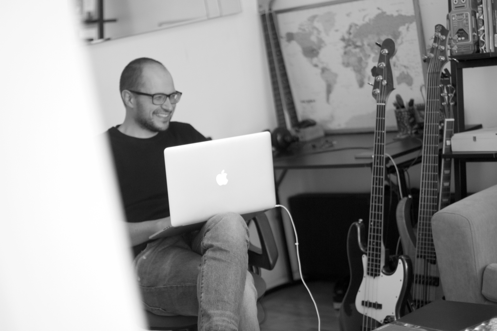

profile
Senior Lecturer in Public International Law · King's College London

I am a Senior Lecturer (Associate Professor) in Public International Law at The Dickson Poon School of Law, King's College London. I serve as Associate Director of the Centre for International Governance and Dispute Resolution (CIGAD), Associate Dean for Doctoral Studies, and Faculty Affiliate at the Centre for Data Futures. I am also a liaison between the Dickson Poon School of Law and King's Institute for Artificial Intelligence.
My research focuses on the authority and effectiveness of international law, and on the processes through which it is produced and undergoes change. I apply empirical and computational methodologies to both legal argumentation and actor behaviour.
positions & affiliations
- Senior Lecturer (Associate Professor), King's College London 2021–present
- Senior Fellow, University of Melbourne 2026
- Visiting Professor, University of Florence 2025
- Faculty Member, Centre for Transnational Legal Studies — Georgetown Law 2024–2025
- Academic Fellow, The Honourable Society of the Middle Temple 2023–present
- Research Fellow, iCourts — University of Copenhagen 2020–2023
- Lecturer (Assistant Professor), University of Liverpool 2019–2021
- Postdoctoral Research Fellow, King's College London 2018–2019
- Doctoral Research Fellow, Graduate Institute, Geneva 2014–2018
education
- PhD in Public International Law, King's College London 2019
- LLM in International Law, University of Cambridge 2014
- Laurea Magistrale in Law, University of Florence 2012
Inquiries by correspondence. A selection of work appears under practice, research, and data.